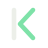

Read
crates/kc-provider/src/lib.rs and 3 more filesApprove edit_file?
Four candidate identities, each shown as mark, wordmark, app icon, palette, a slice of the web UI, and a README banner. Pick one (or mix: e.g. the B mark with the A palette) and the next step is to produce the final kit from it.
Evolves what already ships: the gold diamond favicon and the warm charcoal UI from karucode-v3-themes.html. Lowest-risk option; no UI recolouring needed.
crates/kc-provider/src/lib.rs and 3 more filesTerminal-native. The mark is a stylised k built from a bar and a chevron, which also reads as a prompt. Works in ASCII for the CLI and server banner.
|< glyph, blinking cursor in motion
karucode_Light, editorial, borrowed from the hanko stamp: a vermilion circle with the k pressed out of it. Stands apart from the sea of dark-gold and neon dev tools.
crates/kc-provider/src/lib.rs and 3 more filesAbout the agent loop itself: stream → tool → result → repeat. An open ring with a node marks "the step it is on". Friendlier and more product-like.